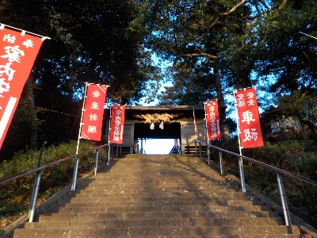
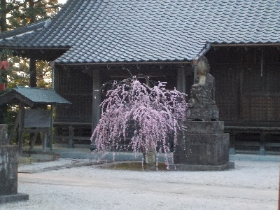
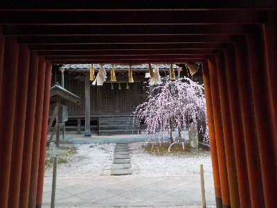
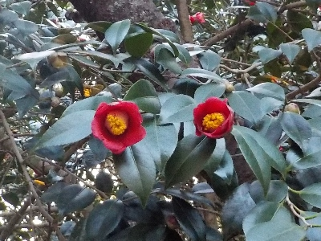

塩冶神社に枝垂れ梅を見に行きました。
更新日 : 2025/03/13

出雲観光協会のインスタグラムで枝垂れ梅を紹介されていたので、塩冶神社に見に行きました。

小さいのが1本だけですがキレイでした。
枝垂れ梅を見に遠くから観光に来るようなものではないですが、近くの方はどうぞって思いました。

写真を撮られる方にもオススメかな。

椿の花もキレイでした。
島根県出雲市上塩冶町1749-7
更新日 : 2025/03/13

出雲観光協会のインスタグラムで枝垂れ梅を紹介されていたので、塩冶神社に見に行きました。

小さいのが1本だけですがキレイでした。
枝垂れ梅を見に遠くから観光に来るようなものではないですが、近くの方はどうぞって思いました。

写真を撮られる方にもオススメかな。

椿の花もキレイでした。